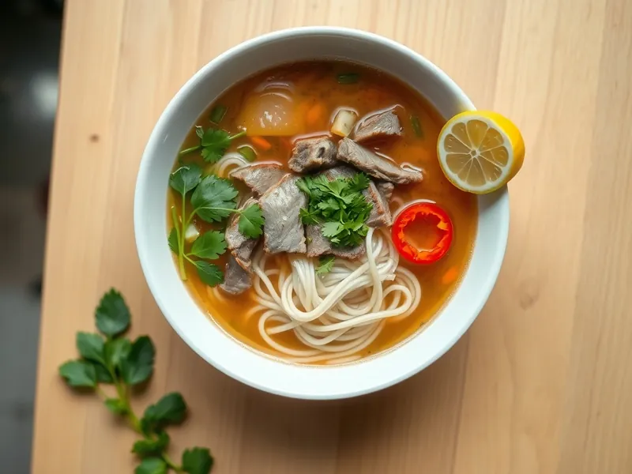

Фо бо с говядиной
Вьетнамский суп с рисовой лапшой, тонкими ломтиками говядины и пряным бульоном
150 мин4 порц.415 ккал на порциюБ 28 · Ж 16 · У 39Азиатская кухня
Открыть в приложении: порции, таймеры, список покупок
Продукты на 4 порц.
- Говядина500 г
- Рисовая лапша160 г
- Лук репчатый2 шт
- Имбирь30 г
- Корица2 щеп.
- Соевый соус2 ст. л.
- Лимон0,5 шт
- Кинза0,5 пучка
- Зелёный лук20 г
- Соль1 ч. л.
- Вода2500 мл
- Перец чили по желаниюпо вкусу
Как готовить
- Разрежьте лук пополам, имбирь толстыми пластинами. Подпалите их на сухой сковороде на сильном огне 5 минут до тёмных пятен.
- Залейте говядину холодной водой, доведите до кипения, снимите пену. Положите лук, имбирь, корицу и варите на слабом огне 2 часа, пока мясо не станет мягким, а бульон ароматным.
- Процедите бульон, добавьте соевый соус и соль по вкусу. Мясо нарежьте поперёк волокон как можно тоньше.
- Залейте рисовую лапшу кипятком на 5-7 минут или отварите по инструкции на упаковке, откиньте на дуршлаг.
- Разложите лапшу по глубоким тарелкам, сверху мясо, залейте кипящим бульоном.
- Посыпьте кинзой и зелёным луком, подавайте с дольками лимона и кольцами чили.
Совет. Подпалённые лук и имбирь дают фо характерный сладковатый дымный аромат: этот шаг не пропускайте.